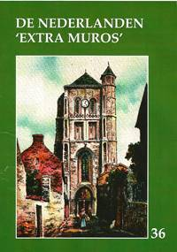
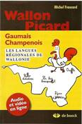
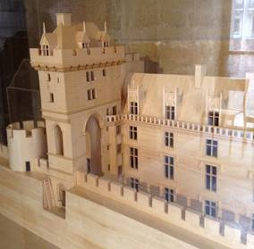
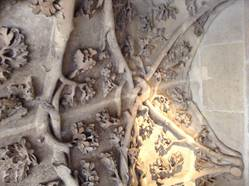
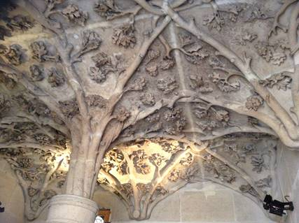

> nieuwsbrief
> JGe jg. - 2e trimester 2014
| Bijdragen over: |
Hernieuwen ledenbijdrage voor 2014
De hernieuwing van de bijdragen voor 2014 verliep
uitzonderlijk vlot. De ledenbijdrage voor 2014 blijft
ongewijzigd en beloopt voor het in mei te verschijnen nieuwe Jaarboek
De Nederlanden ‘extra muros’ (waarover
verderop in dit nummer méér info) en voor de
driemaandelijkse Nieuwsbrief Zannekin
29 €. Vanaf 35 € wordt u met dank als steunend lid
geboekt.
Maakt u bij voorkeur gebruik van ons ‘Belgische’
zogenaamd ‘Europees’ rekeningnummer, waarvan de
rekeningoverzichten ons dagelijks meegedeeld worden. Leden
genieten bovendien ook een tastbare vermindering op de
deelnamekosten van de Zannekin-activiteiten.
Studie-uitstap op 26 april naar Longueval in Picardië
We plannen een
dagexcursie naar Longueval. Daar - tussen Atrecht
(Arras) en Amiens - bevindt zich een stukje Zuid-Afrika. Medio
maart verscheen over Longueval een boekje van de hand van Leo
Camerlynck, dat deels in het Afrikaans, deels in het Nederlands
geschreven is.
Als datum voor deze
dagexcursie kozen we zaterdag 26
april 2014
En als programma hebben wij het volgende
uitgewerkt:
08.15 uur: samenkomst
op het Marktplein te Nieuwpoort.
09.15 uur: opstapplaats
te Ieper (station). Vrij parkeren op het terrein van het
voormalige goederenstation (kruispunt
Oudstrijderslaan-Dikkebusseweg) op 100 m van het station).
10.00 uur: opstapplaats te Belle/Bailleul (Huis van het
Nederlands, Ieperstraat - rue d'Ypres) Van daar uit busrit naar
Longueval met een stop onderweg.
11.45 uur: LONGUEVAL:
verwelkoming in het Afrikaans door de heer Thapedi Masanabo,
directeur van het Memoriaal van Delvillebos en bezoek aan het
Memoriaal met de triomfboog en de replica van het Kasteel te
Kaapstad. Vervolgens busrit naar GOUY
13.00 uur in GOUY:
middagmaal en vervolgens wandeling tot
aan de bron(nen) van de Schelde
Aan de bron prijkt deze mooie tekst.
'Felix sorte tua Scaldis fons limpidissime
qui a sacro scaturiens agro
Alluis et ditas nobile Belgium
totque claras urbes lambens
- Gravius Thetidem intras'
'Schelde,
kristalheldere bron, gezegend is uw bestemming
opborrelend uit een
heilige grond
bevloeit en
verrijkt gij de edele Nederlanden
En, kussend vele
beroemde steden
Treedt gij met grote tred in het rijk der
waternimfen'
16.00 uur: koffie en
vervolgens terugrit. Om 18.30 uur: terug in Belle/Bailleul; om
19.00 terug in Ieper; om 20.00 uur terug te Nieuwpoort.
Practisch
Aanmelden - bij
voorkeur via e-post of schriftelijk bij het secretariaar - tot uiterlijk 20 april. Ook uw
bijdrage dient ons voor die datum te bereiken. Deze bedraagt
(alles inbegrepen)
60 € /persoon voor leden en hun huisgenoten;
niet-leden betalen 65 €/persoon.
Daarin is ook de prijs begrepen van de brochure over Longueval
waarvan hoger sprake.
Jaarboek
De Nederlanden 'extra muros'- 2014
Dit 36e Jaarboek De Nederlanden ‘extra
muros’ biedt andermaal een keur aan
bijdragen over de territoria die deel uitmaken van ons
Nederlandse kijk op de geschiedenis van onze territoria ‘extra
muros’.
Als steeds stellen wij er
prijs op het jaarboek in te leiden met de klassieke tekst waarin
uiteengezet wordt waar het de Vereniging /Stichting Zannekin uiteindelijk om
te doen is, en in welk perspectief wij ook ons jaarboek
plaatsen.
Als blikopener is er de
geopolitieke kijk van de betreurde André
Belmans, die als geen ander geijverd heeft voor
een gezamenlijke toekomst van ons territoriaal erfgoed.
Volgen de bijdragen die van
ver of nabij handelen over de Franse - die wij verkiezen als de
Zuidelijkste Nederlanden te benoemen: ze
handelen respectievelijk over Béthune (Jan van Tongeren), de abdij van Waten
(Cyriel Moeyaert), Michiel de Swaen (Camiel
van Woerkum) en het fort van Mariembourg (Ruud Bruyns).
Volgt, bij wijze van
scharnier, de bijdragen over Hoogstraten,
de historische figuur en de plaats die zijn naam draagt (Luc Pauwels) en andermaal een luik
gewijd aan de verwante
architectuurvormen binnen de Nederlanden en de
aangrenzende gebieden (Zeno Kolks).
Met de bijdragen rond de
sabelsleper Maarten Schenk
(Renaat van Heusden) en de theoloog
Ubbo Emmius (Marten Heida) komen
ook de oostelijke Nederlanden ‘extra muros’ volop aan bod.
Een apart maar evenzeer
grensoverschrijdend verhaal brengt Paul
van Hauwermeiren, dat handelt over de kramertalen, zijnde het
Bargoens van de destijds rondtrekkende handelslieden, dat ons
van West-Vlaanderen tot in het Rijnland en nog verderop brengt.
Voorafgaand aan de Kroniek en
de boekrecensies leest u nog het summiere verhaal van Leo Camerlynck over de merkwaardige Zuid-Afrikaanse oorlogsgedenksite te
Longueval, nu in Picardië, doch ooit binnen de
zuidelijkste Nederlanden.
Voor het eerst verschijnt het
jaarboek De Nederlanden
‘extra muros’ met de meeste illustraties in vierkleurendruk. Een
extra-investering die hopelijk tot een bredere lezersschaar
leidt!
Extra bij dit jaarboek is ook
het overzichtsregister van de vijf vorige jaarboeken, dat deze
editie iets omvangrijker dan gewoonlijk maakt. Daaruit leren we
dat onze jaarboekenreeks tot einde 2013 niet minder dan 377
bijdragen (naast 221 boekrecensie) bundelde rond de Nederlanden
‘extra muros’.
In hun geheel vormen ze
voorwaar een unieke documentatie over ons geestelijk en
nationaal erfgoed.
Onze hernieuwde en niet
geringe dank bij dit alles aan het adres van onze medewerkers,
temeer daar allen ‘pro deo’ bijdragen tot de uitstra-ling van
ons jaarboekenproject. Zonder hen hadden waren we voorwaar niet
aan deze 36e editie toegekomen!
PS.
Verwijzend naar het summiere verhaal van Leo Camerlynck rond de
Zuif-Afrikaanse oorlogssite te Longueval in Picardië willen we
er op wijzen dat dit verhaal meer uitgebreid aan bod komt in een
aparte tweetalige (Nederlands-Zuid-Afrikaans) en overvloedige
geïllustreerde ZANNEKIN-brochure
van 36 pagina’s. Mit overboeking van 5 € (verzending inbegrepen)
op een van onze rekeningen krijgt u de brochure toegestuurd.
Tweede brief uit Brugge aan Zee
in ’t Brugse Vrije, in ’t jaar 1604
De
watergeuzen zijn geland en onze zeearm is verzand.
De boten
in de grijze verte worden groter dan groot
en schepen
vergaan en zinken als een zwaar beladen boot.
De pijl
van de tijd zoeft voorbij en valt achter het achterland.
Grotius en
de vromen geloven in de Heiland en zijn woord.
Dwepers,
dopers, volgelingen van Menno Simons en Calvijn
raken
verstrikt in schorren en slikken en worden vermoord
en na een
tijd zal geen bosgeus nog ergens veilig zijn.
Het weer
is hard want de wind giert hier als een dwingeland.
Diepe
beken en brede kreken leiden naar de wilde vloed
en Sluis
wordt ontzet door Spinola uit het Spanjolenland.
Oostende,
het nieuwe Troje, met dat laatste geuzengebroed
weerstaat
vier jaar aan de belegering van de vijand
en Cadzand
is een eiland zonder eilanders met have en goed.
Cyriel
Moeyaert en Mark Ingelaere
* Het Woordenboek van het
Frans-Vlaams was een tijdje geleden
uitverkocht. Het is nu weer verkrijgbaar tegen 21 €. In
Frans-Vlaanderen is het te koop in Het Huis van de Veldslag
in Noordpene. Ook Nieuw Oud Vlaams,
het bijvoegsel bij het Woordenboek, is herdrukt. Het is ook in
het Huis van de Veldslag
verkrijgbaar. Het kost 10 €.
* het
oktobernummer van het Bulletin du Comité
Flamand de France (nr. 91-92) publiceerde
Christian Ghillebaert van Steenvoorde een sterk gedocumenteerd
artikel over ‘l’Abbé Jules Andouche, préfet de l’indiscipline’,
begraven in z’n geboortedorp Berten. Hij vermeldt drie
grafstenen waarop de leuze van Guido Gezelle staat “Wees Vlaming dien God Vlaming schiep”.
De oudste , die op het graf van René Schodduyn in Ambleteuse
(Ambletuwe) uit 1937, die van Jules Andouche in Berten uit 1948
en die van Gantois, enkele jaren na z’n z’n dood in 1968.
Sinds-dien is een bij gekomen, op het grafkruis van Renaat
Despicht (†1960) in Steenvoorde staat sinds enige tijd diezelfde
leuze, aangebracht door de Werkgroep de Nederlanden. Wat dat
“indiscipline” te betekenen heeft is me niet duidelijk. Toch
nooit dat Andouche als surveillant in Haze-broek het Vlaams
spreken van de scholieren dat verboden was, door de vingers zag.
Opmerkelijk
in dit artikel over Jules Andouche is voetnoot 6 waarin
Christiane Ghillebaert ons zegt welke studies over de Vlaamse
Beweging in Frankrijk volgens hem traditioneel betrouwbaar zijn.
Daarin staat Erik Defoort en ook Etienne Dejonghe. In m’n
bespreking van Defoorts boek Une châtelaine
Flamande, Marie Thérèse le Boucq de Ternas
heb ik Defoort gewezen op z’n vooringenomen standpunt door een
te groot vertrouwen in E. Dejonghe en z’n artikel Un
mouvement séparatiste dans le Nord et le Pas-de-Calais
sous l’ocupation (1940-1944), le Vlaamsch Verbond van
Frankrijk. Ik wijs hem op
verschillende onterechte aanhalingen erin uit de Lion
de Flandre en zelfs op een paar
tekst-verkrachtingen. U kunt die bespreking lezen in de KFV-Mededelingen,
14e jaargang, nr. 4, blz. 15-18. Het zou de moeite waard zijn om
deze bespreking en zelfs uitgebreid opnieuw te laten
verschijnen. Nooit heb ik op m’n bewijzen reactie gekregen noch
van Defoort noch van Etienne Dejonghe.
* In de
negentiende eeuw gaven de Frans-Vlamingen uit de streek van
Rijsel, Henry Bruneel en de historicus Edward La Glay onder de
gemeenschappelijke schuilnaam H. E. Landsvriend een boekje uit Scènes
Historiques Flamandes, Schild en Vriend 1302-1303,
Charles-le Mauvais, 1356-1386. “Flandre au
Lion“ prijkt ook op de kaft. Uitgegeven in Parijs en Rijsel in
1841.
* In 1887
publiceerde Ferdinand Degroote in Rijsel een Frans
gedichtenbundeltje onder de boektitel VADERLAND.
In 1888 geeft hij een tweede bundeltje uit: LES
FLAMINCANTES, eveneens in Rijsel. “Dédiées à mes
collègues du Comité Flamand de France”, lezen we vooraan in het
boekje. Het bevat helemaal geen strijdgedachten maar alleen
figuren als de kantklosster of de tovenares en heel wat
natuurgedichten.
* In
Zegerskappel staat op het kerkhof nog een mooie Nederlandse
graf-steen uit 1875 van Sophia Delphina Bous, dochter van
Ignatius Bous en Theresia Cerclaeys, geboren in 1812 en
overleden in 1875. Prachtig getuigenis van trouw aan de
moedertaal. De voornamen zijn Neder-lands in tegenstelling met
alle andere graven, zelfs met het Franse graf van Henri en
Justin Blanckaert, twee vurige Vlaamse strijders. Op die hun
graf ligt wel de bekende plaat met “Hier rust een Vlaming”.
* Een
vouwblaadje brengt ons vier redenen om het “West-Vlaemsch” te leren. Het is
een goede poging verwoord in een anders niet zo keurige taal. Ze
mogen hun mooie Frans-Vlaams niet teloor laten gaan. Trouwens
het Woordenboek van het
Frans-Vlaams en Nieuw
Oud Vlaams wor-den veel verkocht in Frans-Vlaanderen,
bepaald in het Huis van
de Veldslag in Noordpene.
* Van de
vijf graven op het kerkhof in Steenvoorde waarop de namen van
ouders van een priester voorkwamen met de eretitel HEERVADER en
VROUWMOEDER, is er maar één teruggevonden: Heervader Louis
Campagne, 1882-1968, Vrouwmoeder Leonie Demeiter, 1885-1952. Hun
zoon Edouard Campagne was pastoor van Lederzele en Eringem. Hij
was vriend en klassegenoot van Ward Corsmit. Naast het graf van
Professor Maxime Deswarte stond het graf van Heer Vader Lucien
De-swarte, 1879-1948 envan Vrouw Moeder Rachel Quetu, 1880-1930.
* Voor
kort werd gemeld dat er op het kerkhof van Belle een Nederlandse
grafsteen opnieuw ontdekt werd. We kennen een tweede graf met
een Nederlandse tekst op, dat van Louis Sonneville die in
Sint-Janskappel woonde op de Zwarte Berg. Nog tijdens z’n leven
had hij z’n grafsteen laten maken met erop: “Heer, in uw handen
beveel ik mijn geest”. Hij had die tekst geput uit het Krachtig gebed van Keizer
Karel. Eigenlijk komt die voor in een psalm en heeft Jezus
die woorden uitgesproken op het kruis. Ik heb een foto kunnen
nemen van Louis - met z’n kleindochtertje bij z’n graf.
Sonneville was een vriend
van Marguerite Yourcenar. Hij stuurde haar in Amerika enkele
kraaiebloemen (boshyacinten) die ze in haar huis in een pot
plantte en verzorgde. Louis Sonneville is de stichter van het
Yourcenar-museum in Sint-Janskappel.
*
Frederik De Vos is erin geslaagd
om een keurig verzorgd handboek Vlaamsch
samen te stellen, voorzien van leuke tekeningen.
* Het Bulletin van
het Comité Flamand de France brengt nu ook een bladzij in het
Vlaams, zoals IJzerhoek.
In een van nummers werd die bladzij gewijd aan het kasteel van
Ekelsbeke en ook het duivenkot werd vermeld. Bedoeld was
natuurlijk de mooie duiventoren met mooie muurtekens erop die
getuigen van trouw aan de Nederlanden met het Sint-Andrieskruis.
IJzerhoek
brengt geregeld fijn vertelde verhalen in het Vlaams van de
literair begaafde Marcel Marchyllie uit Spijker. Het zou mooi
zijn als z’n verhalen gebundeld en uitgegeven werden.
* Op een
vleugel van de kasteelboerderij van de verdwenen burcht in
Rubroek lezen boven de verschillende staldeuren in mooie letters
ingegrift in de bovendrempel: INDIEN GODT
MY BEWAERT / VAN STORM WAETER / DONDER EN VIER / OVER HONDERT
JAER / BEN ICK NOCH HIER 1763
Het
gebouw staat er nu al ruim 250 jaar dit jaar. ‘Over hondert
jaer’ werd enkele jaren geleden overpleisterd maar je ziet nog
de eerste letters. Het is te wensen dat de eigenaars dit stuk
weer leesbaar maken en dat de Werkgroep
De Nederlanden toestemming krijgt om de letters
rood of zwart te schilderen. Hopelijk blijft het gebouw nog
lange jaren bestaan.
Wallons, Picard, Champenois, Gaumais
Mais, encore une fois,
ces remar-ques n’enlèvent rien à la qualité de l’ouvrage. On y
trouvera une foule de renseignements intéressants, si bien qu’il
peut servir de vade me-cum en bien des domaines pour ceux qui
s’intéressent au wallon. On y trouvera notamment des re-cettes
régionales, de Charleroi com-me de Liège, un bon aperçu sur les
langues régionales dans les médias, sur les langues régionales
et les nouvelles technologies, dans l’en-seignement, la
législation, une bon-ne bibliographie, la liste des
associ-ations qui s’occupent du wallon, celle des membres de
Bourgondiërs in het centrum van Parijs
Ruud Bruijns
In het hart van Parijs staat
half verborgen tussen de statige 19e eeuwse gevels een
middeleeuwse woontoren met een wel heel bijzondere geschiedenis.
Tegenwoordig heet deze toren ‘Tour Jean sans Peur’ (Toren Jan
zonder Vrees), vernoemd naar hertog Jan van Bourgondië
(1371-1419). Het maakte eens deel uit van een groter complex,
het zogenoemde Hôtel des Ducs de Bourgogne (zie afbeelding 1).
Dit ‘Hôtel’ raakte na de dood van Karel de Stoute voor de
poorten van Nancy in 1477 in verval. Aangezien de geschiedenis
van de hertogen van Bourgondië zo vervlochten is met de
Nederlanden, leek het mij interessant om over deze toren wat
meer over te vertellen.
Op 23 november 1407 werd
Lodewijk van Orleans, de broer van de Franse koning, in de
straten van Parijs door de volgelingen van de her-tog van
Bourgondië om het leven gebracht. Dit was een dieptepunt in de
zogenoemde honderdjarige oorlog (1337-1453), waarin de
Bourgon-diërs profijt trokken van de oorlog tussen de Fransen en
de Engelsen om de Franse troon. Het is niet zeker of er een
duidelijk verband is met de moord op Lodewijk van Orleans, maar
de Bourgondische hertog ging omstreeks 1410 over tot het bouwen
van een versterkte woontoren in zijn residentie in Parijs.
De toren was niet alleen
bedoeld ter verdediging van de hertogelijke residentie, maar ook
om indruk te maken op de gasten. De hoge stenen toren maakt aan
de buitenkant zelfs heden ten dage nog een grote indruk. We
kunnen ons voorstellen dat het een nog grotere indruk maakte in
de Middeleeuwen, toen de meeste huizen nog laagbouw waren en
waren opgetrokken uit hout. In de toren zelf werden drie
verdiepingen gebouwd waarin zich slaap- en ontvangstvertrekken
bevonden.
Veste in
roerige tijden
De residentie van de Bourgondiërs vond haar oorsprong
in een gebouw dat aan het einde van de 13e eeuw was opgetrok-ken
door Robert II van Artesië, die in 1302 de dood vond tijdens de
Gulden-sporenslag. Dit ge-bouw stond destijds tegen de stadsmuur
aan. De Bourgondi-sche woontoren uit 1410 was geheel uit steen
opgetrokken en was bedoeld als een veilig heenkomen voor de
hertog. Om de toren te voorzien van een goed fundament werd er
voor gekozen om deze te bouwen op de resten van de stadsmuur van
koning Philips-Augustus, die was afgebroken ten gunste van een
bredere om-muring van Parijs.
Toren als propagandamiddel
In het trappenhuis naar de ontvangstvertrekken van de
woontoren werd aan het pla-fond een symbool uit steen gehouwen
dat de Bourgon-dische macht uitbeeldde (zie afbeeldingen 2 en 3)
Naar verluidt was de wen-teltrap een imitatie van die in het
Middeleeuwse Lou-vre. Het plafond was echter uniek en was in de
vorm van een boom met taken en gebladerte dat het gehele plafond
bedekte. De knoestige taken knoopten zich in de dakkoepel
symbolisch samen in Bourgondisch Sint-Andreaskruisen, het
symbool dat door Jan zonder Vrees werd geadopteerd. In de
details van dit bladerdek zijn er veelbetekenende symbolen te
ontdekken. Zo zijn eikels en eikenbladeren, hop en meidoorn te
onderscheiden. Volgens de bijschriften zouden de eikenbladeren
kracht en lang leven uitdrukken en worden ze toegeschreven aan
Philips II de Stoute. De hop zou als noord-Europese plant de
noordelijke herkomst van Jan zonder vrees verbeelden, terwijl de
meidoorn symbool zou staan voor Margaretha van Vlaanderen, de
echtgenoot van Philips II en de moeder van Jan zonder vrees. De
veelheid van taken en bladeren moest ook de viriliteit van het
Bourgondische geslacht uitdrukken, als ware het een stam-boom.
Deze opzichtige toren als
symbool van Bourgondische macht was de Franse koning uiteraard
een doorn in het oog en het was dan ook geen verrassing toen
deze de hand legde op het Hôtel des Ducs de Bour-gogne in 1477,
toen het Bourgondische hertogengeslacht met de dood van Karel de
Stoute ten onder leek te zijn gegaan. De residentie bleef wel
haar naam behouden maar raakte in verval. Het was symbolisch
voor het verval van het Huis van Bourgondië.
Herontdekking van de toren
Het Hôtel des Ducs de Bourgogne
is in de loop der tijd afgebroken, waarna alleen de woontoren
nog restte. Deze werd als het ware herontdekt in de 19e eeuw en
in 1884 op de monumentenlijst geplaatst. De woontoren werd tot
ver in de 20e eeuw gebruikt als wooncomplex voor diverse Parijse
gezinnen. De toren werd pas in de tweede helft van de vorige
eeuw ontruimd en pas in 1999 voor het publiek opengesteld.
De woontoren stond ooit als
symbool voor de Bourgondische macht. Jan zonder vrees was
weliswaar een afstammeling van het Franse ko-ningsgeslacht van
Valois, maar drukte zich als eerste Bourgondische hertog uit als
een vorst uit het noorden. Dat was niet zo vreemd, want zijn
moeder kwam uit Vlaanderen en aangezien Vlaanderen het rijkste
gebiedsdeel was van de Bourgondische landen kwam het zwaartepunt
als vanzelf daar te liggen. Eikenbladeren, hop en meidoorn
onder-streepten het ‘noordse’ zwaartepunt.

Heden ten dage is de woontoren
van de Bourgondische hertogen een toeristische trekpleister
geworden in het Parijse wijk Marais, net ver van het
metrostation Etienne Marcel, niet toevallig vernoemd naar een
middeleeuwse volkstribuun. Het is alleszins de moeite waard om
te bezoeken. Het herinnert ons aan een tijdperk, waarin de
Franse koningen zwak waren en de Bourgondische hertogen vanuit
hun Nederlandse provincies een stempel drukten op het
Middeleeuwse Parijs.
Marten Heida
In het bos toch de bomen
blijven zien
Het was in het begin van
de jaren zeventig van de vorige eeuw dat ik een bezoek bracht
aan André Demedts, toen woonachtig aan de Condédreef te
Kortrijk. In het gesprek viel al gauw het woord
“ontvoogdingsstrijd”. Naar aanleiding hiervan maakte hij de
opmerking: “Wij zouden veel verder gestaan hebben als we niet
zoveel tijd en energie daarin hadden moeten steken.”
Ik werd opnieuw bij deze
uitspraak bepaald tijdens het lezen van het boek Het boek in Vlaanderen
sinds 1800; een cultuurgeschiedenis van Ludo Simons. In
het bijzonder werd ik geraakt door de zin “de belangen van het
geestelijk leven van ons Vlaamse volk te dienen” (375).
Weliswaar is
bovengenoemde zin een aanhaling van een in 1929 gedane uitspraak
van de Mechelse drukker Goossens. Maar als Simons er niet mee
had ingestemd zou hij denkelijk dit citaat niet vermeld hebben.
Deze woorden vertolken ten diepste wat de drijfveer is geweest
om op verzoek van de uitgever zich opnieuw te bezinnen op dit
wel zeer speciale facet van de geschiedenis. Inderdaad opnieuw:
ruim 25 jaar geleden had hij dat ook al gedaan. Dat wil niet
zeggen dat het verhaal zoals het nu beschikbaar is zonder meer
een herdruk is. Waar er aanleiding toe was zijn er nieuwe
inzichten in verwerkt en eventuele misvattingen rechtgezet.
Bovendien is het bijgewerkt tot heden. Ook de verschijningsvorm
is aangepast; verscheen de vorige uitgave in twee delen, deze
keer is de tekst ondergebracht in één band.
De in dit boek
behandelde stof is verdeeld over een tiental hoofdstukken. Voor
mij zijn dit evenzovele mijlpalen die de weg markeren waarlangs
die ontvoogdingsstrijd op dit specifieke terrein zich heeft
afgespeeld.
De tekst kenmerkt zich
door het verwoorden van een stortvloed aan gegevens. Samen geven
ze naam aan een veelheid van initiatieven zowel van uitgevers
als schrijvers. Met betrekking tot de laatste groep heeft Simons
bij uitzondering gebruik gemaakt van de woordgroep “en vele
anderen”. Toch is deze opsomming geen droog relaas geworden. Als
ergens geldt dat de toon de muziek maakt dan zeker in deze
publicatie. Die heeft er ook in belangrijke mate toe bijgedragen
dat de lezer in dit “bos” toch de “bomen” kan blijven zien.
Ongetwijfeld zal Nurks inmiddels wel al hebben vastgesteld dat
er hiaten in dit verhaal voorkomen. Daar ik mij niet bevoegd
acht de vinger bij tekortkomingen te leggen zal ik mij dan ook
onthouden opmerkingen in deze richting te maken. Voor mij telt
het resultaat van de door Simons geleverde inspanning om dit
project in deze vorm tot een voldragen einde te brengen.
Ook de uitgever heeft
zijn waardeoordeel tot uitdrukking gebracht en dat op een wel
zeer bijzondere wijze. Hij heeft daarvoor namelijk gebruik
gemaakt van de stofomslag. Daarop staat een monument in de vorm
van een rechtopstaand boek afgebeeld met daarvoor een man die
uit eerbetoon zijn hoed licht. Treffender had de hulde niet
uitgebeeld kunnen worden. Een hulde die betrekking heeft zowel
op het boek op zichzelf als de man die het gegeven is het
verhaal daaraan verbonden te schrijven. Ik sluit mij bij dit
eerbetoon aan; alleen ik ben – met uitzondering van mijn
jongelingsjaren – geen hoeddrager. Gelukkig biedt het Nederlands
een uitwijkmogelijkheid in de vorm van een gezegde dat laat
weten dat je in zo’n situatie ook je pet ervoor kan afnemen. Wat
ik dus bij dezen doe.
N.a.v. Ludo Simons, Het boek in Vlaanderen sinds
1800 – een cultuurgeschiedenis. Uitg. Lannoo/Tielt, 2013.
640 pp; 50 €. ISBN 978 90 209 8374 6.
Marten Heida
Prins Willem
Alexanderpark 53
NL 3905 Veenendaal
De
Nederlandse taal in de kijker tijdens de 10e Duinkerkse
Talenbeurs
Op
zaterdag 22 maart 2014 had in het grote gebouwencomplex van de
Communauté Urbaine de Dunkerque (CUD) de tiende talenbeurs
plaats. In het middelpunt van de aandacht en van de
belangstelling stond de Nederlandse taal en de Vlaamse cultuur
in Frans-Vlaanderen.
Het
initiatief van de Duuinkerkse Talenbeurs gaat uit van de
“Asso-ciation pour le développement des langues sur le littoral
dunkerquois” of ADLLD in samenwerking met diverse partners uit
Frans-Vlaanderen. De ADLLD werd als vereniging zonder
winstoogmerk opgericht in 2004 en stelt zich hoofdzakelijk tot
doel de talenkennis te bevorderen in het Duinkerke en langs het
Frans-Vlaamse kustgebied.
Tijdens
de tiende uitgave van de talenbeurs werden lezingen en
talen-practicum afgewisseld met Vlaamse muziek, dansen en
volksspelen. Tevens was er een tentoonstelling van aquarellen
van Hervé Claeyssens en M. Duval en ansichtkaarten met de Molens van Vlaanderen
als thema.
Een
lezing werd verzorgd door Louis Marteel, leraar Engels en
Ne-derlands, en auteur van boeken over het Vlamsj in
Frans-Vlaanderen. Hij behandelde het
onderwerp Nederlands versus Vlaams. Dr. Eric Vanneufville,
voorzitter van het Huis
van het Nederlands te Belle (Bailleul), belichtte
Vlaanderen doorheen de eeuwen. De dames Verbeke en De Fruyt
bespraken de grensoverschrijdende contacten op het vlak van
taalverrijking. De talenbeurs kon bogen op een overdonderend
succes.
Het koor
Crescendo en het ruim veertig jaar jonge Reuzekoor uit
Duin-kerke bracht Vlaamse liederen. Ook werden er danspasjes
uitgewisseld.
En de
Vlaamse volksspelen waren van de partij. Voorts vulden
tiental-len stands de zalen van de CUD. Naast het Nederlands en
het Vlaams werd ook de Duinkerkse taalvariant behandeld. Zo
kwamen de “Pène-lècres” (Pennenlekkers) aan het woord. Opvallend
is de nog steeds grote invloed van Vlaams-Nederlandse woorden en
uit-drukkingen in het Duinkerkse taaleigen. Zo blijven bvb. de
meeste Duinkerkse carna-valsgroepen een Vlaams-Nederlandse naam
behouden.
Nederland en Vlaanderen centraal op de
Buchmesse te Frankfurtam-Main
In het Nederlands Dagblad van
13 maart 2014 lezen we een interessante bijdrage over de
Frankforter Boekenbeurs. We lichten enkele passages uit dit
artikel: “De belangrijkste boekenbeurs ter wereld staat in 2016
in het teken van Nederlandstalige literatuur. Nederland en
Vlaanderen zijn dan gezamenlijk gastland van de Frankfurter Buchmesse,
melden in-gewijden aan Novum
Nieuws. Maandag
10 maart 2014 is in Antwerpen een persconferentie van minister
van Cultuur Jet Bussemaker (PvdA), haar Vlaamse collega Joke
Schauvliege en Buchmesse-directeur Jürgen Boos. Een woordvoerder
van Bussemaker wil bevestigen noch ont-kennen dat dan wordt
bekendgemaakt dat Nederland en Vlaanderen in 2016 centraal staan
op de Buchmesse. Ook het Letterenfonds verwijst naar maandag.
Nederland
was ook in 1993 gastland van de boekenbeurs. Dat leverde toen
een gigantische verkoopimpuls op voor Nederlandse literatuur in
het buitenland. Schrijvers als Cees Nooteboom, Harry Mulisch en
Hugo Claus kwamen volop in de belangstelling te staan. Vooral in
Duitsland, maar ook in andere landen.
Het
Vlaams Fonds voor de Letteren en het Nederlands Letterenfonds
hebben zich vorig jaar kandidaat gesteld voor het gastlandschap.
Dat zou een ‘enorme internationale exposure bieden’, lieten de
twee fondsen toen weten. De organisaties verwachten dat
Nederlandstalige auteurs veel meer aftrek zullen vinden in het
buitenland.“ Tot zover het Nederlands Dagblad. In
2014 is Finland gastland van de Buchmesse en in 2015 is
Indonesië aan de beurt. Op deze gigantische boekenbeurs komen
7400 exposanten en ruim 300.000 bezoekers uit meer dan 100
ver-schillende landen bij elkaar.
Edouard
Michielsstraat 51
B –
1180 UKKEL /
Brussel